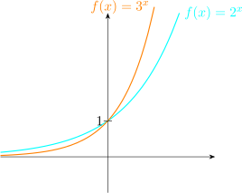

16 Exponential and Logarithm
A function of the form \(f(x)=a^x\) where \(x\) is real and \(a\) is a positive constant is called an exponential
function. The word exponential comes from a word exponent, \('\)Power\('\) or index. So for an
exponential function \(f(x)=a^x\), \(x\in \mathbb {R}\), the variable \(x\) is called the power or the index or the exponent for
\(a=1,2,3,\cdots \).
Here are graphs of the corresponding

Therefore, \(f(x)=a^x\) is a one-to-one function and the inverse exists.
\(e\) is the number such that the gradient of \(y=e^x\) at \((0,1)\) is 1.
\(e^x\) is called the exponential function \(f(x)=e^x,\hspace {0.3cm} e=2.718\)
16.1 The Natural Logarithm Function
16.2 Laws of Logarithm
16.3 Change of Bases
16.4 Equations of The Form \(a^x=b\)
16.5 Derivatives of Logarithmic Function
16.2 Laws of Logarithm
16.3 Change of Bases
16.4 Equations of The Form \(a^x=b\)
16.5 Derivatives of Logarithmic Function
Questions on this section
Stuck on something here? Ask below and it stays attached to this topic.